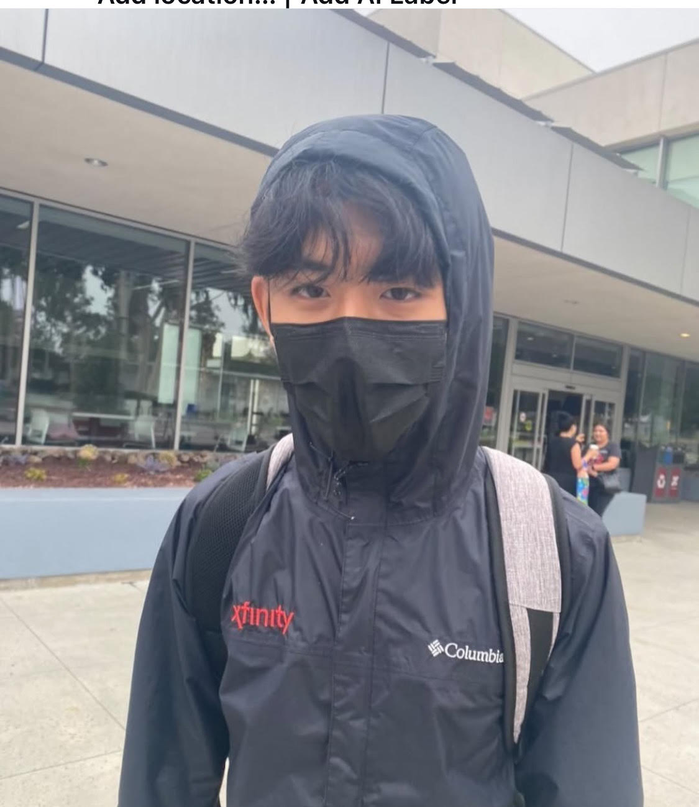

About Me
Brandon Nguyen
I'm Brandon Nguyen, a 19 year old freshmen currently studying Statistics and Data Science at UCLA.

About Me
I'm Brandon Nguyen, a 19 year old freshmen currently studying Statistics and Data Science at UCLA.
